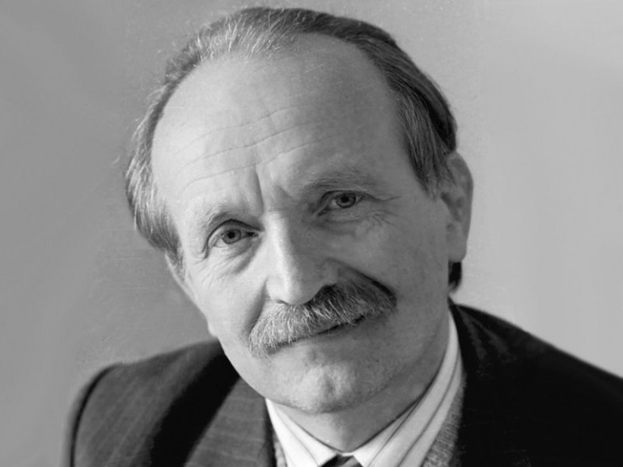

1937, 24 грудня – на Черкащині народився В’ячеслав Чорновіл, публіцист, політик, дисидент, політичний в’язень комуністичного режиму, символ боротьби за незалежність України.
«Якби мене запитали, чи жалкую я про те, як склалося моє життя, про відсиджені 15 років,
я б відповів: анітрохи..., – говорив В’ячеслав Чорновіл,
– і якби довелося починати все спочатку та вибирати, я б обрав життя, яке прожив».
«Чорновіл почав політизуватись під час навчання на факультеті журналістики Київського
університету, – пише Василь Деревінський у книзі «В’ячеслав Чорновіл.
Нарис портрета політика», – його, вихованого на гаслах дружби народів, інтернаціоналізму вразило,
що в столиці України «вовком дивляться, коли ти говориш українською». У молодого комсомольського активіста зневажливе
ставлення до української мови викликало спротив,
пробудило почуття національної образи і честі».
У 1960-х він став одним з лідерів дисидентського руху в Україні. Засновник та редактор
«Українського вісника», в якому оприлюднювали матеріали самвидаву
та хроніки національного спротиву. Член Української гельсінської групи, а згодом Української гельсінської Спілки.
Очолив партію Народний Рух України. Балотувався у президенти України.
Разом з Василем Стусом та Іваном Дзюбою узяв участь у прем’єрі фільму Сергія
Параджанова «Тіні забутих предків» у вересні 1965-го. Під час якої відбулася
акція протесту щодо незаконних арештів української інтелігенції.
1966-го написав дослідження «Правосуддя чи рецидиви терору» –
один із найсміливіших зразків тогочасної української політичної публіцистики. Наступного
року уклав збірку «Лихо з розуму» (Портрети двадцяти «злочинців»). Тут оприлюднив матеріали про заарештованих
1965-го шістдесятників. Її видрукували за кордоном і заборонили в СРСР. В’ячеслав Чорновіл
став лауреатом премії для кращих журналістів світу, що борються за права людини.
За активну журналістську та правозахисну діяльність тричі був ув’язнений та
відбув понад 15 років таборів. Переповідають, що якось на допиті слідчий запитав у Чорновола,
якби існувала незалежна Україна, якої так прагне допитуваний, о ким б він там був.
На що Чорновіл відповів, що редагував би опозиційну газету.
В одному з інтерв’ю В’ячеслав Чорновіл говорив, що хотів би піти з життя
«миттєво, на льоту». Його передбачення справдилося. 25 березня 1999-го він загинув у автокатастрофі
на шосе біля Борисполя. Низка питань щодо загибелі В’ячеслава Чорновола та аварії залишаються насьогодні без відповіді.
Автівка політика врізалася у навантажений зерном «КамАЗ» із причепом, який почав
розвертатися посеред траси. В’ячеслав Чорновіл загинув на місці разом зі своїм водієм. З того зерна,
що було у вантажівці засіяли поле пшениці, яке назвали полем Чорновола. Після того як скосили колосся –
його роздали по усіх областях України.
Попрощатися з ним прийшло до 200 тис. людей. Труна з тілом стояла в Київському
будинку вчителя (колись там засідала Ценральна Рада), а черга бажаючих вшанувати
загиблого простяглася аж до Хрещатика.
Поховали В’ячеслава Максимовича Чорновола на Байковому кладовищі.